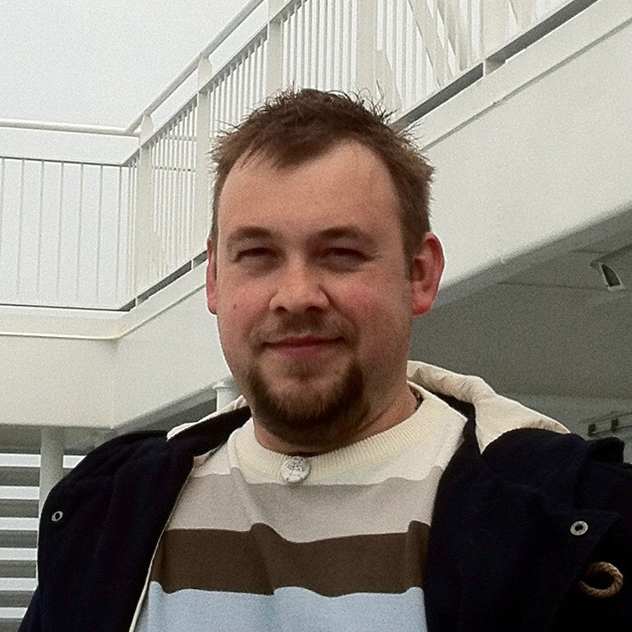

I like to think of myself as of punctual individual who is self disciplined, organised and committed to any project I am working on. I am a good communicator who displays understanding and adaptability. Having had experience of working in very different environments, I become a very good team player, but also gained experience in organising my own work load. I am flexible and not afraid to learn a new skills.
Since my coming to the UK I have been awarded an CompTIA A+ certificate, and started a Bachelor Degree qualifications at Open University, with which I hope to start a new role in IT.
I have finished Technical School of Electric Engineering in Stargard Szczeciński, in Poland, where I had worked in couple of places, of whom the most important was working as an electro-fitter for Polish State Railways.
I have arrived to Burton with my wife in March 2007. Since then I worked as warehouse operative and data-entry clerk, while at the same time looking for permanent position. In May 2007 I started a full-time work and as a Wireman for Hubbell Gai-Tronics, and since 2014 I have advanced to a Test Engineer position.
On 6th of December 2014 my son - Antoni - was born.
| Architecture | Stan-alone PCs and laptops (awarded Comptia A+ certificate) | very good |
| Operating Systems | Windows family | very good |
| Mac OS X | very good | |
| Linux / Unix family | average | |
| Office Suites | Apple iWork | very good |
| Microsoft Office | very good |